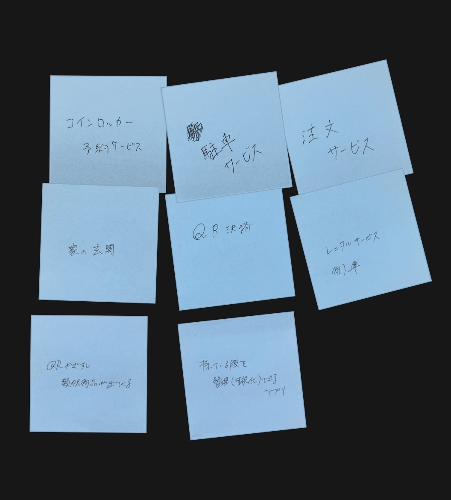
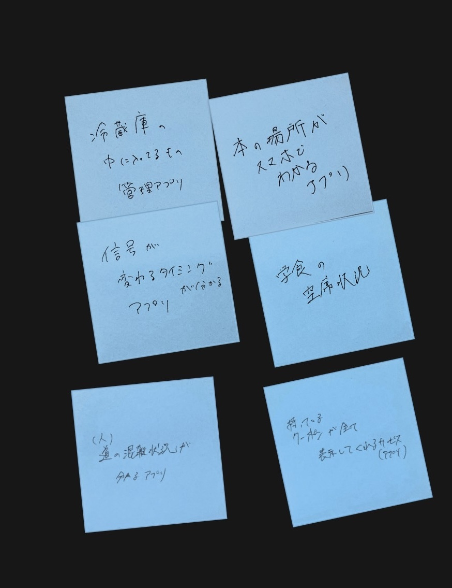
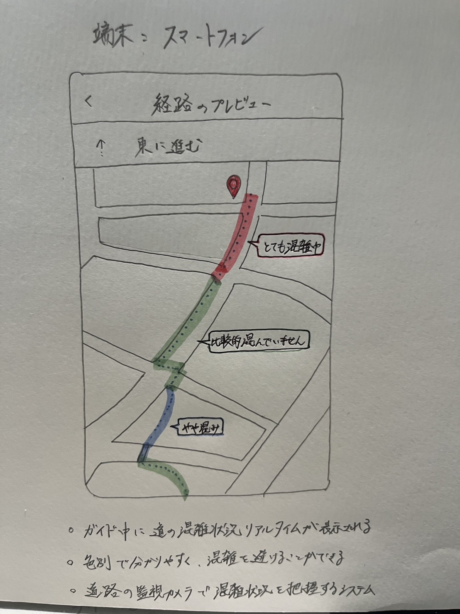

IoTとは、インターネットオブシングスのこと。
IoTは対象のものを直接ではなく、サーバーを介して繋げる役割を持っている。
自転車のシェアリングサービスを例にすると、
User(携帯)___Server（情報・IoT）___自転車（端末）
という仕組みになっている
IoT（遠隔操作）でできることは何か、グループで話し合いました
←既存のIoTサービス / できたら嬉しいIoTサービス→


できたら嬉しいと思うIoTサービスについてアイディアスケッチをしました

Google mapのようなガイドマップの時に、道の混雑状況も一緒に知れるIoTサービスがあったらいいなと思い、アイディアスケッチをしてみました。これは、横浜駅からみなとみらいキャンパスのガイドです。登校時に混雑状況を知ることができれば違う道を使って混雑回避できるところがポイントです！
Document